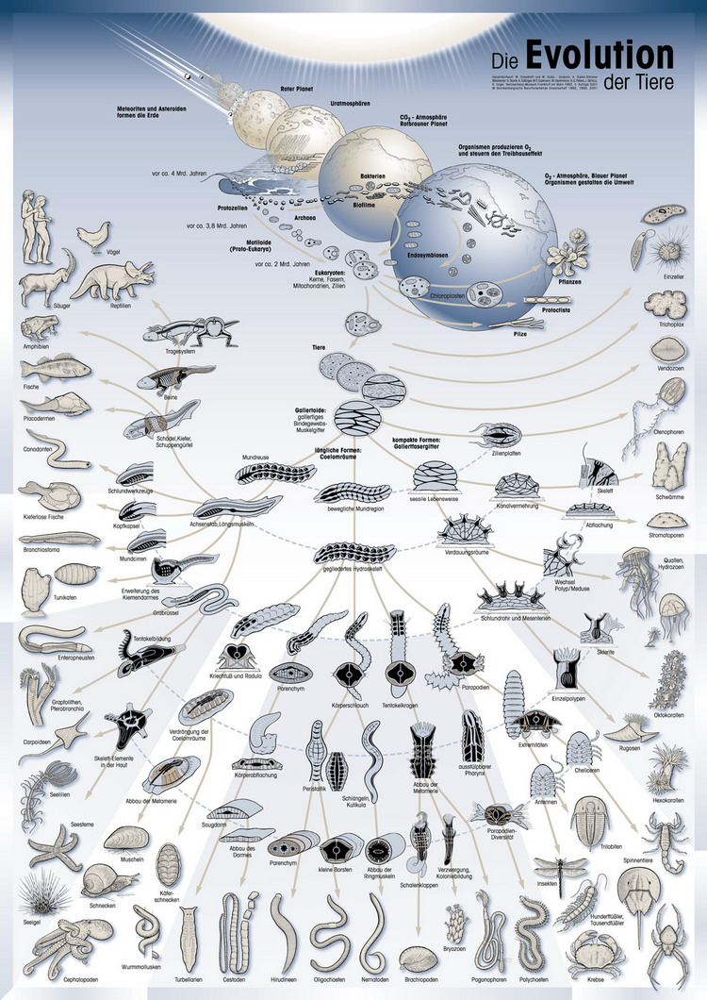

从生命源起与进化论
试证佛说起世经
冯冯
慈忍 / 去去来来 / 誊录
早于公元一八二八年，德国生物学家恩奈斯·冯·拜尔(Ernest Von Baer)发表论文，报告他的发现：“各种动物在胚胎早期，彼此都很相似。原始胚胎，无论是什么动物，都有臂芽(Arm Bud)两颗，极为相似，到了后期，有些胚胎的臂芽发育为臂膀，另一些发展为鳍或翅膀。”
达尔文的“进化论”，今日已是举世科学家接受的观念。可是在一百多年前，当达尔文说人类与猿猴是同源的分支时，却引起轩然大波。因为达尔文学说指出生物都是从原始的单细胞逐渐进化而来的，并非由上帝于七日造成。他否定了犹太教基督教的旧约创世纪中，上帝造亚当与夏娃之说。教廷及教会因此对达尔文大张挞伐，直到今天，仍在多方抨击达尔文学说。在美国，一九二零年代，教会反对学校教授进化论，极为激烈；曾经控告讲授此学说的教师，引起学术界与教会的剧烈争辩。余波到了一九八三年，又再汹涌，教会再次大规模抨击科学界，并发起全美的“反对进化论”示威运动。双方激辩，至今未息。
此篇论文，可能启发了其后辈英国生物学家达尔文的灵感。达尔文(Charles Robert Darwin)于一八五九年发表“进化论”，指出一切生物同源，各别进化以适应环境，他称此种进化的作用为天然选择──适者生存，不适者天然淘汰。
“你承认你是猴子的子孙吗？”这是教会方面的宣传标语口号：“你宁愿要猴子做祖宗而不要上帝吗？”
基督教有护教之苦衷，值得同情。但是，从科学来看，达尔文的进化论并没有错误。达尔文的进化论及天然选择学说，并不是闭门造车。而是他在澳洲、美洲及各地实地研究多种生物所得到的结论。今日的生物学已经突飞猛晋，越来越新的生物学发现，对于进化论的证明及支持有增无减。
一八六零年，孟德尔修士(Rev. Gregor Johann Mendel)研究豌豆的实验，发现“遗传基因”(Genes)于细胞核内，作为决定遗传特性与适应环境的因子。此一学说支持了达尔文的学说。
一九五三年，美国生物学家詹斯·瓦逊(James Watson)及法兰斯·克力克(Francis Click)两氏发现：细胞核内染色体含有遗传基因核酸DNA，证实了它是决定遗传因素及适应生存环境的进化原动力。达尔文学说获得科学的充份证明。
让我们综合达尔文及各科学家，对于欲界生命起源及发展的研究心得，简略予以一一分析。
地球内层的熔岩岩浆，分解出二氧化碳、氢气、氨气、水蒸气等气体，岩浆时常在地心内翻滚转动，汹涌澎湃，趁隙而喷出地壳，是为火山爆发。火山喷出熔岩及大量的上述各种气体，这些气体因受到地心吸力，而不能远离地球，大部份仍然飘浮在地壳外面的上空，成为空气，但其时仍无单独存在的氧气。氧气仍然被禁锢在蒸汽内(水是一个氧与两个氢的化合物)，地球表层也还没有生物出现。
大约在四千五百个百万年前，我们的地球，是一烈火气团，从太阳甩飞出来，受到太阳的吸力，仍然绕日而旋转。逐渐冷却后，外表形成一层地壳，中心仍是烈火热浆。现在地质学家们用“碳十四辐射检查仪”，所测得地球最古老的岩层的年龄大约是三千八百个百万年──科学家称一个百万年为一个“米亚”(Mya是百万年Million Years的缩写)──而认为地球的石岩岩层大约是三千八百个米亚前形成的(碳十四测量，是今日科学界公认最可靠准确的测龄方法，因为碳十四元素的辐射稳定，有固定的速率。从物质内的碳十四消失情形来看，就可估出其年龄)。
起先，海中无机化学成分元素氨(阿摩尼亚)、碳等，因受宇宙辐射与闪电的闪击而发生化学反应，化合成为一些有机化学成分，例如含碳甚多的氨基酸，酒精及简单的碳水化合物等等。这种从无机化学转为有机化学的作用，称为“生物化学进化作用”(Biochemical Revolution)，这些简单原始的有机化学物质，是初期欲界生命的基石。其实大约是在距今三千五百个“米亚”以前 (三百五十亿年前)。
浮在地球外面的水蒸气逐渐冷却，凝聚成为雨点，而被地心吸力吸坠。雨水渐渐注满了地面低陷之处，积聚成江河海洋，雨水冲刷地层，分解的矿物质流入海洋中，使海水密度越来越大，这些矿物质有镁，有钠，有钙……，以氯化钠为多，形成了海中的盐份苦咸味道。海水浮在地壳上，好像一片蛋壳盛着的水，底下是地壳内层，地心内不断喷出岩浆与气体，很多火山在海底爆发。天空上由于云层中的正电与负电作用而发生闪电雷轰，又有多种宇宙线从宇宙各方射来，于是，在温暖的海水中，发生了奇妙的化学变化，无机化学成分逐渐作用，成为有机化学成分！
最先出现的原始欲界生物，是只有一个细胞的，类如熟知的细菌，但是它简单得连细胞核都没有。它就只有一层薄膜，内含氨基酸与各种元素的原子。它的科学名称为普洛卡里奥特单细胞原生物(Prokaryotes)。元素的游离原子，是有并吞其他元素原子的倾向的，或会与其他原子合并的。此单细胞原生物比原子复杂，识力也较强，懂得吞吸海中的其他化学元素物质及半有机体，以维持自己的生命，也懂得自己分裂以繁殖增加，是为欲界生命的开始。
渐渐地，普洛卡里奥特单细胞原生物，演变为运用吸收阳光和其他海中元素，自己制造能源以利生存。大约在三千个米亚以前(三百亿年前)，自制食物的单细胞(Prokaryotes)出现了。它形成了细胞内的“光合作用”(Photosynthesis)利用阳光与二氧化碳(Carbon Dieoxide)及水化合，制成简单的糖，储存于体内。早期的地球充满了二氧化碳，单细胞生物体内的光合作用，吸收了二氧化碳的碳，制造碳水化合物，而释放氧气出来，于是，空气中出现了独立游离的氧气！
在原生代(Proterozoic)，这些原始的单细胞原生物，进化演变，成为许多种形态。从地质研究，在古老达一千二百个万年(一百二十亿年)前的岩石上，发现有这一类的原生物单细胞的化石记录，被称为普洛卡里奥特原生细胞(Prokaryote)。它们已经发展出细胞核，发展出新的细胞分裂繁殖方法，那就是细胞核内的染色体分类为二，各自成为独立小组──细胞于中央分裂，成为两个细胞，各自有细胞核──这样的细胞分裂方式，得到完全相同的两个细胞，因为细胞核内的染色体中一分裂为二，完全相同。新细胞的遗传特性，就是由染色体分裂而得，这样一路不断分裂下去，一代又一代。但是，在此阶段的细胞分裂繁殖方式，仍是无性生殖，在此阶段，亦未有动物植物之分。

从分析动植物的蛋白质(Protein 又译生质精)得知，单细胞原生物，大约是在“原生代”开始，分别向动植物两途发展进化。
大约在一千个百万年(一百亿年)前，单细胞原生物从无性生殖进化为有性生殖──由单细胞的独自分裂，演变为两个细胞的结合，互相交换细胞核内的染色体，重新排列，然后分裂为新的后代，这种交换染色体的生殖方式，有优生的意义，有助于生存竞争及天然选择，也是有性生殖之开始，然后又逐渐发展而走向动植物两途的分歧。
从地质学化石来观察，已知最古老的多细胞植物化石，有七十五亿年。即是说，大约七十五亿年前，单细胞原生物进化为复细胞原始植物，形成特别的植物双层细胞膜及复合形态。可惜多细胞的原生动物(软体动物)，没有留下什么化石给科学家发现作为物证。植物与动物的分途进化，不停地进行于古生代(Paleozoic)及中生代(Cenozoic)。
地球大气层中，已经积存大量自由的氧气，植物越多，放出的氧气越多，越有利于多细胞的动物。因为动物细胞内的新陈代谢(Metabolism)作用，需要氧气来帮助，使二氧化碳从碳水化合物食物排出，而二氧化碳则是植物所需要──光合作用吸收碳而排出氧，故此动植物彼此是互相依存的。大气中氧气的积聚，在顶层形成了臭氧层(Ozone Layer)，吸收不少宇宙辐射线，减少了辐射线对生物的细胞核内遗传基因核酸DNA的伤害，有利于进化。
在“古生代”的寒武纪(Cambrian, Paleozoic 大约三百四十五个百万年前)，原始生物仍然居留于海洋之中，彼时绿藻(Green Algae)出现。比最初的蓝绿色小藻进步，绿藻可能是陆上植物的祖先。同时代，海中出现大批的软体动物，也出现有壳节足动物(Arthropods)，成为现代的蜘蛛、龙虾，和虾蟹的祖先。此时，在古生代当中最普遍多见的有壳节足动物是三叶虫(Trilobites),它们现在早已绝迹，但是留下很多化石于岩层上。
随之又有头足动物(Cephalopods)的出现，最具代表性的是古代乌贼(鱿鱼)，那是在奥陶纪(Ordovician)进化的。然后，初期的脊椎动物(Vertebrates)进化形成,最先出现的是有鳞甲而无颚的鱼类，体外的甲层有保护作用，可避免被其他生物猎杀的危险。
随后的“志留纪”(Silurian period)时代的岩石层，留下很多早期陆上生物的化石，已有脉管系统植物(Vascular Plants)的化石，显示着它们内部已发展了运输营养及水份的管系，连结于根部与茎叶之间，而且叶茎外表有蜡状分泌物可保持水份，此种早期陆上植物，仍居于沼泽地区及海陆接壤之处。
在海洋上，生物不停地进化，此时出现了有颚的披甲盾状鱼类(Placoiderm),如鲎鱼(Limulus Longispinus)，它是从无颚有甲鱼类进化来的，它既吃草(Herbivorous),也吃动物(Carnivorous),开了吃肉动物的先河，它两边各有一鳍，可以向岸上进军，成为海中动物侵入陆上之始。
到了石灰纪(Carboniferous Period 大约是三百四十五个百万年前)，气候渐渐干燥，植物从无种子化为有种子，出现了裸子植物(Gynnosperms)，即是不开花亦可结子的植物，例如针叶树(conifer)一类的柏树。同时，两栖动物进化出现了爬虫类(Reptiles)，它们身上长着坚硬的厚厚的鳞甲，作为保护，又可保持体温，它们生下有壳的蛋。于是，可耐干燥的裸子植物与不耐干燥的爬虫类动物，渐渐进化到可以完全脱离水中生活，并可在路上繁殖。
在泥盆纪(Devonian Period 大约三百九十五个百万年前)，海中进化形成了许多种鱼类，最重要的大事是：出现了有骨骼的鱼类，它们体内形成坚硬的脊椎骨及全身骨骼系统，它们的子孙开始进侵陆上，享用陆上沼泽茂盛的植物，然后又回到海中居住。这种早期的两栖鱼类，可以在陆上生活，也可在海中生活，它们的鳍内有坚硬的骨，可供其在路上爬行寻觅食物，从一个沼泽到另一个沼泽。有些两栖鱼类能适应沼泽水中含氧较少的止水环境，另一些两栖鱼类体内的气泡(鳔)，发展为肺，以便从水底浮到水面外来呼吸氧气，这种就是有名的“肺鱼”(Lunged Fish)，今日还可以在某些原始沼泽找到古代肺鱼的子孙。中国大陆贵州的娃娃鱼，与台湾中部的两脚娃娃鱼，同属此类。
在古生代二叠纪(Permian Period 距今约三百个百万年前)，沼泽地区的原始巨大蕨族森林，被裸子植物所取代。两栖动物与昆虫都非常兴旺，爬虫类动物进化演变成许多种类。从地质学家发掘得到的此一时代的巨大爬虫类蛋卵化石可资证明。此一时代出现帆背龙(Dimorph Odon)，这是一种大蜥蜴(lizard)，它是进化的一个重要分叉点。从它开始，有一支动物进化走向哺乳动物，距今大约两百八十至两百二十五个百万年前。
然后，到了中生代(Mesozoic)，此一时代为时大约一百六十万年，地质学上分为三个纪，这时代爬虫类最多，布满全球，被称为“爬虫时代”。
在三叠纪(Triassic Period 距今约两百二十五个百万年前)，有些爬虫类进化为能飞的原始鸟类，有翅膀，但仍是恐龙般的头部和嘴牙。
此时，也有一些爬虫类进化为哺乳类的动物。在三叠纪末期，另一些爬虫类进化为巨大可怖的恐龙(Dinosaurs)，一些成为鳄鱼。在植物方面，松、杉、枞......等森林出现。裸子植物之中出现红木(Redwood)森林，“恐龙时代”是此一时代的别名，恐龙纵横全球。
进入侏罗纪(Jurassic Period距今约一百八十个百万年之前)，过渡的哺乳类进化为哺乳类动物(Mammal)，体型甚小，有些类似今日的田鼠。它们的化石在欧洲、亚洲、美洲均有发现，在侏罗纪的五千万年内，恐龙统治了海、陆、空。最小的有翼恐龙小如麻雀，大如苍鹰，与始祖鸟并存。另外，在陆地上的恐龙越来越巨大；在水中的爬类以鱼龙(Ichthyosaurs) 与蛇颈龙(Plesiosaurus)为最多，前者后来进化为鱼类，后者后来成为今日的海豚及鲸族。此时的始祖鸟类已脱下鳞甲，长出羽毛，但是，仍保留爬虫类的骨骼与四肢、尾巴及嘴、牙。在植物方面，银杏(白果)出现，与蕨薇同样普遍。
在侏罗纪的哺乳类动物有好几种，被称为中生代哺乳类动物(Mesozoic mammals),它们以植物为主食，以昆虫为副食，彼时为数不多。
在白垩纪当中，植物进化到出现有花结子的被子植物(Angiosperms)，种子不再裸露。今日的植物有百分之九十六以上均是被子植物的后代。被子植物开花结果，其花蜜吸引鸟类及其他动物，有动物昆虫为之传播花粉及种子，不必像裸子植物之花粉靠风力传播。同时，被子植物的花果种子提供丰富的营养给鸟类及哺乳动物，刺激了它们的繁殖。
白垩纪(Cretaceous Period距今约一百三十五个百万年前开始，至六千五百万年前止)来临，在此七千万年之中，太平洋的海洋地壳挤向北美洲西岸，促成岩石山脉的隆起(俗译为洛矶山脉Rocky Mountains)；在南边，太平洋地壳撞向南美洲，促成安地斯山脉上升(Andes)。此一时代当中，恐龙横行全世界，巨大的食肉的暴龙(Tyrannosaurus)高达六公尺(二十英尺左右)，头骨巨达一公尺，又有剑龙、驼龙等多种，又有巨龟，巨蛇，又有羽齿龙(Pteranodon)等。此时哺乳类动物体型仍然很小，尚未控制陆地，并且开始进化为两支：一支为有袋哺乳动物(Marsupials)，由于它们体内没有胎盘，故此必须在体外生出一个育儿袋，来盛戴其早产胚胎。今日的澳洲袋鼠等即是此类动物的后代。另一支进化为有胎盘的胎生哺乳动物。从发掘的此一时期化石来看，此两支动物差别甚少，唯一最显著的区别是牙齿不同。
到了白垩纪末期，恐龙类已经由盛而衰，泯灭殆尽，海中的鹦鹉螺(Nautilus)亦于此时几乎绝迹，两者均只留下化石遗迹，供现代的地质学家发现作为证据。
恐龙类绝迹之后，减少生存威胁，有利于哺乳类的繁殖发展。甚至于在恐龙类未完全灭绝之时，哺乳类已开示进化为数种灵长类(Primates)，初期的灵长类动物体型不大，脑子亦小。
新生代分为五个时期：晓新世(Paleocene)，始新世( Eocene)，渐新世(Oligocene)，中新世(Miocene)，及鲜新世(Pliocene)等。
进入新生代(Cenozoic Era，距今六千五百万年前开始，至距今五百五十万年前止)，哺乳类动物蓬勃繁殖，有些留在陆上，有些回到海中，有些向空中发展，于是出现古代巨象獴猛、古代巨鲸、古代角兽、飞行蝙蝠、飞狐……及吃肉的哺乳动物。此时进入“哺乳动物时代”，灵长类的发展进化尤其特殊迅速。
地质学家发掘得到的最早的灵长目化石，是在北美洲洛矶山脉的白垩纪(Cretaceous Epoch)岩层，和美国西岸的鲜新世地层中，证明彼时已有地居灵长目，它们体型仍不大，以昆虫及植物为食。白垩纪出现的灵长目动物，有些在树上生活，以花果昆虫为食。
从始新世(约五千三百五十万年前开始)岩层化石所见的灵长目动物，是树居的，已进化发展了手及脚，亦有可运用自如的大拇指及大脚趾，以利抓物攀树，爪指进化为指甲，底下有肉垫，更利于抓树枝及食物，下肢较前肢为长，以便跳跃，两眼眼眶已生长在前面并列，发展了立体视觉及深度判断，便于树上跳跃。
到了渐新世(约三千七百五十万年前开始)，灵长目的嘴筒己进化为较短，眼眶骨完全长合，此时的灵长目较少依靠嗅觉，较多运用视觉。
到了中新世(约两千二百五十万年前开始)，地球气候因转轴与倾斜角渐趋稳定而开始形成四季气候，到处出现大草原。在非洲出土的化石，证明在此时期已有猿类(Dryopithecines，及Ramapithecines)两种。它们的化石，散见于欧亚非三大洲。这些原始猿类，牙齿相似于近代猿类，但是四肢仍然像猴类。
进入石器时代(Stone Age),原始猿人已进化为原始人类，会用石头制造刀斧等工具，开始游牧生活，渐渐会种植植物及饲养畜牲作为粮食，农耕生活大约在十万年前已开始。人类已形成，一直在不断进化之中，逐步进化到成为现代的人类，文明及文化则大约在五六万年前开始。
到了鲜新世(大约五百万年前开始)，灵长目有一支进化为原始猿人(Hominids)，其他的各支进化为猿或猴，原始人猿可以两足站立行走(Bipedal)，但是脑子仍很小，体型也很像猿或猩猩。在非洲出土的化石，证明这种原始猿人的存在，它们已会运用树枝作为猎具，在大草原上猎取动物为食。两足站立行走，及互相分食猎物，是其渐渐进化为人类的特征，也有些已经会用石器。
不过，各处的人类进化的进度参差不一，有些快，有些慢。一般认为这一世代的人类文明从一万年前开始。实际上这是就亚洲及欧洲与中东民族而言，相信另有些民族更早发展文明，不过已经泯灭；而另一些民族则进化较慢，到现在仍然停留在新石器时代的生活方式，例如巴西阿玛森河流域森林内的一些土著，澳洲山地的一些土人，菲律宾荒岛森林内几年前发现的石器民族。
上面说过，现代人是从灵长目的一支进化来的，猿猴也是从灵长目的另一支进化而成的。这两支十分接近，有共同的祖先──早期的哺乳类灵长目动物──所以，只可说人类与猿猴类由同一祖先分别进化而成，并不能说人类就是猿猴的子孙；人类与猴子是堂兄弟那倒是不错的。
荷兰人考古学家李奇博士(Dr. Leaky)夫妇在非洲坦桑尼亚一带，发掘获得原始人猿的头骨及牙齿，经碳十四鉴定，大约为二百五十多万年前的人猿──经生物学家研究，其头骨与牙床都已接近人类，脑子份量也比猿猴为大──这是进化论的人类进化记录证据之一，比一九二零年在北京近郊周口店发现的北京人头骨还早了一百万年。爪哇发现的人猿头骨也有一百万年历史，这些都是人类进化的历史证物。
从这许多举世科学界公认的科学事实发现，来看犹太教基督教的旧约创世纪，就会知道这本犹太民族捏造的创世说完全站不住脚。创世纪说：“上帝照他们的形象造人。”
旧约创世纪说：“起初上帝创造天地，是虚空混沌的，上帝的灵运行在水面上，上帝说要有光，就有了光，上帝看光是好的，就把光暗分开了，上帝称光为昼，称暗为夜，有晚上，有早晨，这是头一日。”
这一段就已经完全不符新科学发现的事实了。怎么会先有水，后有光？又后有暗？有光是昼，暗是夜？完全不合宇宙情形(请参看拙文宇宙起源分析)！
旧约创世纪又说：
“上帝说诸水之间要有空气，就将水分为上下，上帝造出空气……这是第二日。”
“上帝说，天下的水要聚在一起，使旱地露出……上帝称旱地为陆地，称水聚处为海。上帝说：要地发生青草，和结种子的菜疏，并结果子的树木，各从其类，果子都包着核……这是第三日。”
先有水，后有空气？先有海后有陆地？先有开花结果的植物菜疏？这些全都不符合科学发现的事实！
“上帝说，天上要有光体，可以分昼夜，作记号，定节令、日子、年岁，并要发光在天空，普照在地上……于是上帝造了两个大光，大的为昼，小的管夜，又造众星，把这些光摆列在天空，普照在地上，管理昼夜……这是第四日。”
先造好了地球海陆和生命，才造天上的太阳和月亮和群星？摆列在天空？一个人形的上帝怎样摆列无限大的星云系统？合理吗？这分明都是以色列游牧民族无智慧的丰富想象力产生的神话而已！
“上帝说，水要多滋生有生命的物，要有雀鸟飞在地面上和天空之中，就造出大鱼和水中滋生各样有生命的动物，又造出飞鸟……这是第五日。”
先造陆上的植物，后造水中的生物？这跟科学发现的化石次序完全相反！
“上帝说，地要生出活物来……造出野兽，牲畜，昆虫，各从其类……上帝说，我们要照我们的样式造人，使他们管理海里的鱼，空中的鸟，地上的牲畜和全地，并地上爬的一切昆虫。上帝就照自己的形象造人，乃是照他的形象造男造女……上帝说：看哪！我将遍地一切结种子的菜疏，一切树木结有核的果子，全赐给你们作食物，地上的走兽，空中的飞鸟，并各样爬在地上有生命的物……这是第六日。”
上帝既是照衪的形象造人，反证之，就是先有人形的“上帝”了。天地万物都在六日之内便造齐了，上帝第七日歇工安息。既要安息的上帝，显然是肉体的“人”，并不是万物的灵，否则，为何要休息？万能的上帝会疲倦的吗？
“……地还没有草木，田间菜疏还没有长起来，因为耶和华上帝还没有降雨在地上。也没有人耕地。”
此段与前段自相矛盾，前面说了有水，又说造了草木花果，此处忽然又说没有，又说还没有降雨，自相矛盾之至！与地球发展事实不符！
“但有雾气从地面上腾，滋润遍地，耶和华上帝用地上的尘土造人，将生气吹在他鼻孔里，他就成了有灵的活人。名叫亚当。”
创世纪前段说，上帝在第六日照衪的形象造了人：“按照我们的样式造人，使他们管理……上帝就照自己的形象造人，乃照衪的形象造男造女？”显然，上帝是复数的一群“人”了，而且也早做成了男女，叫“他们”管理万物了，但是，到了“第七日”才又造成人类的始祖亚当！前后两段，矛盾漏洞百出！第六日造的男女，他们到哪里去了呢？那先造成的男女人类不算数吗？
“耶和华上帝吩咐他说：园中的各种各样果子你都可以随意吃，只是分别善恶树上的果子，你不可吃，因为你吃的日子必定死！”
如果上帝是公义的，为什么不许亚当吃辨别善恶的果子？为什么不教亚当分别善恶？这合理吗？可见犹太民族神权统治者之目的是要使人愚昧无明无知，以便统治！和佛教恰恰相反，佛教首重教人分辨善恶，“诸恶莫做，众善奉行，自净其意，是诸佛教”(增一阿含经第一卷)，并且教人发展智慧。
“耶和华上帝说：那人独居不好，我要为他造一个配偶帮助他……上帝使他沉睡……于是取出他一只肋骨，又把肉合起来，就用那人的肋骨造成一个女人，领到那人的跟前……因此，人要离开父母，与妻子连合，二人成为一体……”
这一段越发荒诞不经，完全不符合科学发展的事实。生物甚至在低等生物时代都已分了阴阳雌雄，怎么人类的始祖反倒只有男人亚当而无女人？还得用亚当的肋骨来造一个夏娃？上帝分明叫他夫妻二人连合为一体。但是后来，蛇诱惑了夏娃与亚当偷吃了禁果，上帝就震怒了，上帝说“那人已与我们相似，能知善恶，现在恐怕他伸手又摘生命树的果子吃，就永远活着。”上帝就把他们赶出伊甸园，并诅咒亚当与夏娃：“因为你是从土而出的，你本是尘土，仍要归于尘土。”从此人类就因犯了原罪而变为必死的了。
旧约的这些犹太以色列民族的初民的神话，就是编也编得不好。前后矛盾，漏洞百出，研究过科学，就知道创世纪完全只是神话，毫无事实根据，全不合理！
基督教的教义以博爱施予为基础，这是很好的，可惜仍采用旧约的创世纪，成为白璧之瑕！基督教的利他主义，可能源出于佛教的大悲，“施予比受的人更有福”可能源出于佛教的施舍济度。“信得永生”“天国在你心中”等等，都可能源出于佛教的净土法门(见拙作“神秘失踪十八年”)。古天竺阿育王晚年大兴佛教，派遣佛教僧侣远赴巴比伦、埃及、波斯、土耳其、东非洲、马达加斯加、希腊、阿拉伯、北非洲……等地，弘扬佛教，可能种下了佛教的种子，而启发了日后的基督教教义。可见基督教是佛教与传统犹太教两者的混合物。现代的教廷禁止教徒擅阅旧约，显然是因为旧约内矛盾太多，难圆其说。本来，基督教的教义精华尽在新约，亦实无必要硬拉旧约作为基础，旧约唯一可供用途只是“十戒”及预言弥赛亚而已。
我们用科学事实又一次反证的犹太教创世纪的荒谬，就更可以发现，佛教对于宇宙与世界的源起说是远为合乎科学了(关于宇宙起源，请参阅拙文“宇宙起源”)。在本文内，已经提出了综合的科学发现的事实，不妨也看看佛经对于生命起源的讲法。
佛说起世经(隋天竺三藏阇那崛多等译)第八卷，三十三天品第八之三：
“诸比丘！于三界中，有三十八种众生种类，何等名为三十八种？诸比丘，欲界中有十二种，色界中有二十二种，无色界中复有四种。
诸比丘！何者欲界十二种类？
谓：地狱、畜生、饿鬼、人、阿修罗、四天王天、三十三天、夜摩天、兜率陀天、化乐天、他化自在天、魔身天等，此名十二。
何者色界二十二种？
谓：梵身天、梵辅天、梵众天、大梵天、光天、少光天、无量光天、光音天、净天、少净天、无量净天、遍净天、广天、少广天、无量广天、广果天、无想天、无烦天、无恼天、善见天、善现天、阿迦腻吒天，此等名为二十二种。
无色界中，有四种者。谓空无边天、识无边天、无所有天、非想非非想天。此名四种……。”
佛陀开示的三界各“天”，就是宇宙中的各度空间（Dimension）。欲界三十三天，与色界二十二天等，有些是物质的宇宙，有些是星云漩系统，有些是星球，有些是其他物质宇宙的世界或空间；无色界四天等，是无形的非物质宇宙的世界。事实上，并不只此数，佛陀只是择要而举例言之。
起世经卷九世住品第十一又说：
“……乃至吹沫，造遍净宫七宝杂色，显现出生……是名世间坏已转成……转成已住……如是次第皆以风吹。”
佛语所说大风吹沫，造成世间，此与当前顶尖宇宙太空物理学家，发现超级宇宙大爆炸后，射出泡沫──“大泡泡”学说相同（详细请参阅拙文“宇宙源起”）
起世经卷九，最胜品第十二之一：
“……世界转已，如是成时，诸众生等，多得生于光音天上，是诸众生生彼天时，身心欢豫，喜悦为食，自然光明，又有神通，乘空而行，得最胜色，年寿长远，安然而住。……尔时世间转坏已成，空无有物，诸梵宫中，未有众生，光音天上，福业尽者，乃复下生梵宫殿中，不从胎生，忽然化出。”
起世经卷七，三十三天品第八之二：
“佛语，诸比丘，一切诸天有十种别法，何等为十？
诸比丘，一、诸天行时，来去无边。二、诸天行时，来去无碍。三、诸天行时，无有迟疾。四、诸天行时，足无踪迹。五、诸天身力，无患疲劳。六、诸天之身，有形无影。七、一切诸天，无大小便。八、一切诸天，无有洟唾。九、诸天之身，清净微妙，无皮肉筋脉，脂血髓骨。十、诸天之身，欲现长短，青黄赤白，大小粗细，随意悉能，并皆美妙。端严殊绝，令人爱乐，一切天身，有此十种不可思议。
“诸比丘，又诸天身……身有光明，及有神力，腾虚飞逝……
“……阎浮提人，寿命百年，中有夭逝，……阎摩罗世，诸众生等，寿七万二千岁，亦有中夭，诸龙及金翅鸟等，寿命一劫，亦有中夭……他化自在天，寿万六千岁，魔身天，寿三万二千岁，梵身天，寿命一劫，光忆念天，寿命二劫，遍净诸天，寿命四劫，广果诸天，寿命八劫，无想诸天，寿命十六劫，不粗诸天，寿命千劫，无恼诸天，寿两千劫，善见诸天，寿三千劫，善现诸天，寿四千劫，色究竟天，寿五千劫，虚空处天，寿十千劫，识处天，寿二万一千劫，无所有处天，寿四万两千劫，非想非非想处天，寿八万四千劫……。
“何等众生，以识为食。所谓地狱众生，及无边识处天等，此诸众生，皆用识持以为其食……”
起世因本经(隋天竺沙门达摩笈多译)卷一，阎浮洲品第一：
“……诸比丘：此三千大千世界，一时转合，一时转合已而还复散，一时转散己而复还合，一时转合已而安住，如是，世界周匝转烧，名为败坏，周匝转合，名为成就。周匝转住，名为安立……
“……此等尽名诸天住处……众生所住，如是众生，若来若去，若生若灭，边际所极……”
起世经卷九，世住品第十一：
“佛语诸比丘……时彼众生，得住虚空，诸仙诸天，梵行道中，得住中已，离喜快乐……时彼处一切众生……便复成就，如是无喜，第三禅道，成就已证，证已思惟，思惟已往，身坏命终，生遍净天，如是下从地狱阎摩罗世，阿修罗世四天王天，及至梵世光音诸天，自此已下一切众生，一切处，一切有，皆悉断尽，是名世转……”
佛说的起世经等诸经，对于宇宙源起及生命源起，都有详细的解说。佛说的宇宙成住坏空循环，完全符合当今最新宇宙学及物理学的发现。佛说的诸天，是多重多元的空间，及多元的宇宙世界，其中有物质宇宙，也有非物质宇宙。佛说的诸天众生，有些是有色有形有体的，有些有色无形，有些有形无色，有些无体，这些是非物质的生命,非物质的生命是一些能，不是有形相的。
佛说的诸天众生，那是身有光明，腾空飞逝，寿命又长达几万年乃至几万劫不一；而且来去无边无碍，毫无踪迹，有形无影，无肉体，这已经说得很明白，是非物质、无形体的生命。这些“天人”──现代语称为“天外人”──他们以“识”为食，故有智慧，他们以“能”为体，故能来去自如。佛说他们身有光明，分明就是一种光能形体。佛说彼时世界从坏空初转为成，空无有物，诸梵天宫中（各宇宙），未有众生。于“光音天”上的众生，显然是另一个宇宙的光音天，上面有众生，福业已尽者，显然是 其光能渐渐消灭──佛说过他们会有灭尽的──他们就飞射到另一个宇宙或世界去“转生”，继续他种形态的生命。他们是放射能，不是肉体，故此不从胎生，而是忽然化出“众生从无始生死来”（阿含经三十四）。
当代顶尖太空物理学家与生物学家，正在努力向宇宙找寻有形与无形的生命。美国太空署耗资数十亿美元，在波多黎各国的三座山丘之间，建成了全球最大的宇宙探测无线电望远站，目的就是企图与宇宙中的各种有形无形的生命联络。美国太空船“航行者”现已越过了土星飞向太空深处，永不再归来，它携带有录音金唱片，播放人类的音乐与讯号，希望让宇宙中的其他“天人”或生命收听到。这些都说明了新科学是认为：宇宙中仍有很多种有形或无形的生命存在的，只是彼此未 能沟通联络而已。
稍后之时，我们的地球形成，大地凝固，佛陀把地层凝成地壳及地心仍是热浆的情形，形容了出来，请看起世经卷九最胜品第十二之一：
“复次诸比丘……当于如是三摩耶时，此大地上出生地肥，周遍凝住……如有人熟煎乳汁，其上便有薄膜停住，亦如水膜，停住水上……。”
“诸比丘，复于后时，此大地上，所生地肥，凝然停住，渐如乳酪，成就生酥，有如是等形色相貌，其味甘美，犹如上蜜，尔时众生……取此地味，食之不已，其身自然渐渐涩恶，皮肤粗厚，颜色浊暗，形貌改异，无复光明，亦更不能飞腾虚空，以地肥故，神通灭没……。”
佛经说，“天外人”飞射到地球，从非物质的能量，与地球的物质结合，从此变为物质化的生命。这一段暗合现代科学之发现，宇宙辐射能引起海水中的碳、氨……的化合，而产生氨基酸的有机生命体。天外来的能量被吸收了，变为物质，当然就失去光明，也不能再飞了。现代科学已证明了能量是会被物质吸收的。
佛所说的地球生命起源，显然比较犹太民族的创世纪合理很多，最少佛说的较为接近科学的发现。虽然，文字上并非与今世的科学完全相似；但其内涵，在我看来，是与今世科学接近的。文字经过翻译及润色，未必就是原形，大致上意义仍不会错。
从佛说起世经来看，能量形态的非物质天外生命“天人”，早于我们地球初凝成时，就已飞来与地球的物质元素结合，这也是符合科学发现的。科学家们发现：从地球刚刚开始凝固，就一直有许多种宇宙辐射能量，从各方射来。初期未有云及空气来吸收它，但后来至今，有了空气大气层吸收了不少，可是仍有辐射能射来的。有些是已知的宇宙辐射能，例如甘玛线、紫外线、红内线、阿法线，有许多仍未知是什么辐射能，能量形态的“天人”仍然不断飞来。
地球上的生命有物质的与非物质的两部分，是两者结合而成的。单凭元素的化学作用，产生的肉体（物质）生命是不完全的。元素在肉体内发生的电及磁，只可说是能源，不能说就是“自性”或“智慧”的本身。肉体的物质以上，还有一种非物质的“识”能，与肉体结合，互相为用。佛菩萨有法身、报身、化身，一般的生命也有父母身（肉体）与中阴身（识能或灵魂）；天人飞来托生，是识能来托生寄形于物质，并非肉体从外太空飞来投生。佛说光音天人，已说得很明白，是“光”与“音”能量形态的智慧生命“天人”，光与音当然是可以来去无碍的。
同经末段又云：“……(佛语)诸比丘：尔时日天胜大宫殿，从东方出，绕须弥山，半腹而行，于西方没已，还从东方出……”
须弥山有很多，每一须弥山是一个星云漩系的巨大中心，如果接受此说，来看佛经的宇宙现象，就会较容易明白。像这一段，佛分明是指太阳绕银河系中心而旋转，地球绕日而行，故此见到日出于东，没于西。
大楼炭经卷六天地成品第十三：
“佛告比丘，天地破坏，更始成之后，人皆在第十五阿卫货罗天上，其天上人，以好喜作食，各自有光明神足，其寿甚久长……彼天人福德薄禄，命欲尽者， 从阿卫货罗天上，来下游此间地……取地味而食之，人食是地味之后，身即粗坚……亡失光明，神足不能复飞行上天……”
此段意与起世经同，显然是指地球形成早期时代，“天人”来到地球变为物质化生命。
原载香港《内明》第170期：1986年05月1日